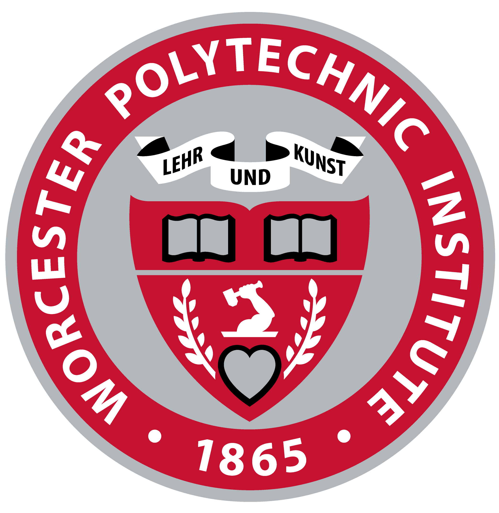
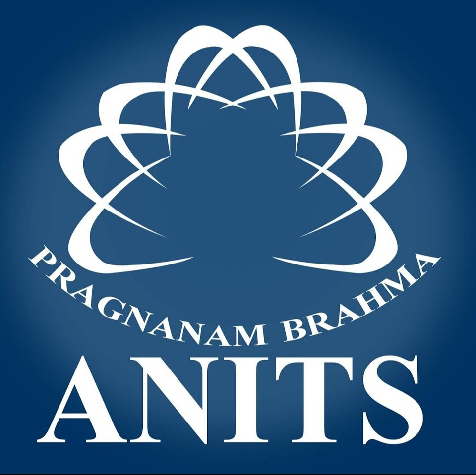
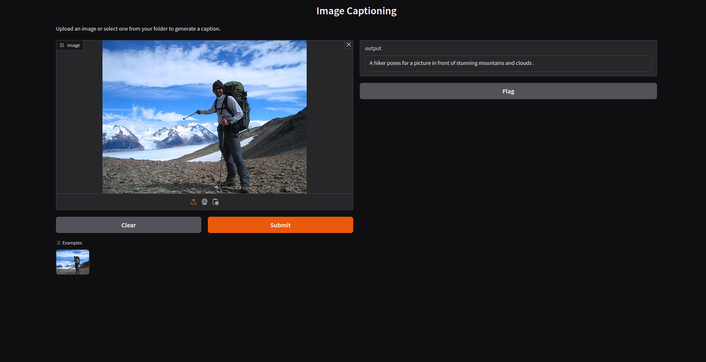
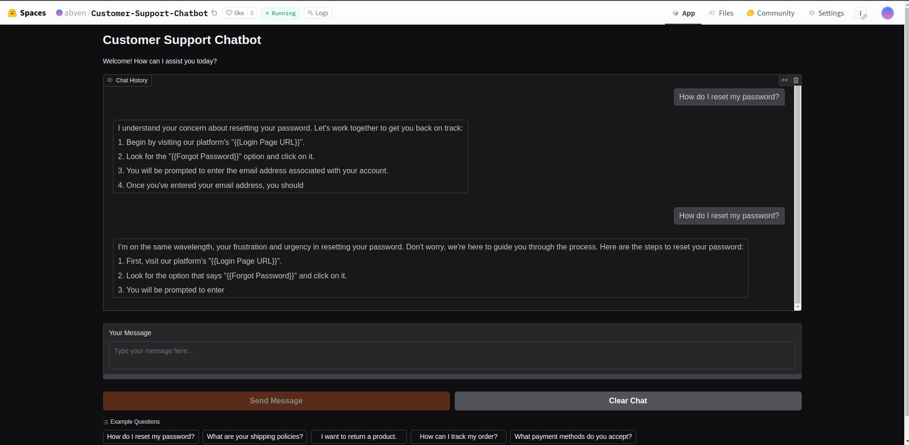

Butchi Venkatesh Adari
About Me

I'm Butchi Venkatesh Adari, a passionate Robotics Engineer and Machine Learning Researcher driven by real-world impact. With a Master's in Robotics Engineering from WPI and a Bachelor's in Computer Science, I've built a strong foundation in AI, perception, and automation. My work focuses on intelligent systems from robotic grasping with monocular depth to LLM-driven data pipelines. I enjoy transforming complex problems into elegant AI-powered solutions, combining vision, language, and control to push boundaries in robotics and MLOps.
Experience
Graduate Researcher
Conducted cutting-edge research on monocular depth estimation and grasp pose prediction using Apple's Depth Pro and ViT-based Grasp Transformers. Deployed a real-time system on ReactorX-200 for robotic grasping tasks.
Machine Learning Engineer
Built YOLOv5 + DeepSORT pipelines for people tracking and OCR-based entity extraction for enterprise clients. Delivered containerized AI pipelines with FastAPI and deployed on cloud infrastructure.
Education
Worcester Polytechnic Institute (WPI)
Focused on robotic perception, control systems, and AI-driven automation. Worked on real-world grasping systems, LLM integration, and computer vision pipelines for robotic platforms.
Anil Neerukonda Institute of Technology & Sciences (ANITS)
Gained strong fundamentals in algorithms, software development, and systems engineering. Developed a passion for machine learning and intelligent systems.
My Projects
Enhanced Monocular Depth Estimation with Grasp Pose Prediction
Successfully implemented a groundbreaking project in robotic vision and manipulation that combines advanced depth estimation with practical grasping capabilities. Fine-tuned Apple's Depth-Pro model to achieve significant improvements in monocular depth estimation, particularly excelling in scenarios where traditional depth sensors fail. When tested with the ReactorX-200 robotic arm at 30cm height, conventional depth sensors produced null values, while our enhanced monocular depth system maintained accuracy with just 1-2cm error margin. Further optimized the model through quantization, achieving comparable performance with FP16 precision while maintaining minimal error rates (note: INT8 quantization showed increased error margins). Developed and deployed an innovative Grasp Transformer model that leverages RGB images and monocular depth data to predict optimal grasp poses for robotic manipulation. The system has been successfully deployed on the ReactorX-200 (Trossen Robotics) platform, demonstrating robust performance in real-world grasping tasks. There is an attached video which shows the ReactorX-200 arm successfully grasping a ball from a distance of 15cm, showcasing the practical application of our depth estimation and grasp pose prediction system.
Rufus - Intelligent Web Data Extractor for RAG Systems
🤖 Engineered a cutting-edge AI-powered web extraction system that revolutionizes how data is gathered and processed for RAG (Retrieval-Augmented Generation) applications. Rufus intelligently crawls websites based on natural language instructions, making complex data extraction as simple as writing a prompt.
Key Features
- AI-Driven Crawling: Implemented advanced crawling algorithms powered by LLMs (TinyLlama, with planned OpenAI integration) that understand and follow natural language instructions for targeted data extraction.
- Smart Content Selection: Developed intelligent filtering mechanisms that identify and extract only the most relevant content, significantly reducing noise in the final dataset.
- Dynamic Navigation: Built robust handling for complex web structures, including nested links and dynamically loaded content, ensuring comprehensive data collection.
- Structured Output: Created sophisticated document synthesis pipelines that convert raw web content into clean, structured formats ready for RAG applications.
Technical Implementation
- Core Architecture: Built with Python, utilizing FastAPI for REST endpoints and Gradio for an intuitive user interface. Containerized with Docker for consistent deployment across environments.
- LLM Integration: Leveraged LangChain for orchestrating LLM operations, initially using Ollama-TinyLlama for development with seamless migration path to OpenAI for production.
- Vector Storage: Implemented ChromaDB for efficient storage and retrieval of document embeddings, enabling fast and accurate content matching.
- Modular Design: Created a highly maintainable codebase with clear separation of concerns across crawling, AI processing, and data synthesis components.
Performance & Scalability
- Intelligent Rate Limiting: Implemented adaptive rate limiting and concurrent processing to maximize throughput while respecting website policies.
- Error Resilience: Built comprehensive error handling and recovery mechanisms, ensuring reliable operation across diverse web environments.
- Monitoring & Logging: Integrated detailed logging and monitoring capabilities for tracking system performance and debugging.
Research-Paper-RAG
Developed a production-ready Research Paper Analysis System leveraging Retrieval-Augmented Generation (RAG) architecture. The system efficiently processes academic papers from the arXiv dataset, utilizing FAISS for similarity search and Flan-T5 for text generation. Built on Google Cloud Platform, it features a FastAPI backend deployed on Vertex AI, with a user-friendly Gradio interface for real-time querying. The system employs advanced embedding techniques to understand and retrieve relevant research papers, generating context-aware responses to user queries. Implemented with a robust CI/CD pipeline using GitHub Actions, the system includes comprehensive monitoring, automated deployments, and scalable infrastructure. The architecture ensures efficient handling of large-scale document processing while maintaining quick response times and high accuracy in research paper analysis.

Image Captioning with Vision Transformer and GPT 2
This project is an image caption generator that uses a Vision Transformer (ViT) to extract visual features from images and a GPT-2 model to generate natural language descriptions. The model is deployed on both AWS and Hugging Face, allowing users to upload images and receive descriptive captions in real-time.
Real Time Customer Support Chatbot
🤖 Developed and deployed an enterprise-level customer support chatbot leveraging LLM technology for automated, context-aware responses. Implemented comprehensive MLOps practices with full monitoring and versioning capabilities. Containerized the solution with Docker, featuring an interactive Gradio UI for seamless model interaction and testing.
Miniature Self Driving Car
Implemented a high-performance object detection system on Raspberry Pi 4, achieving 98% accuracy in real-time identification of traffic signs, pedestrians, and obstacles. Demonstrated practical application through successful integration with a miniature autonomous vehicle, enabling self-guided navigation in controlled environments.